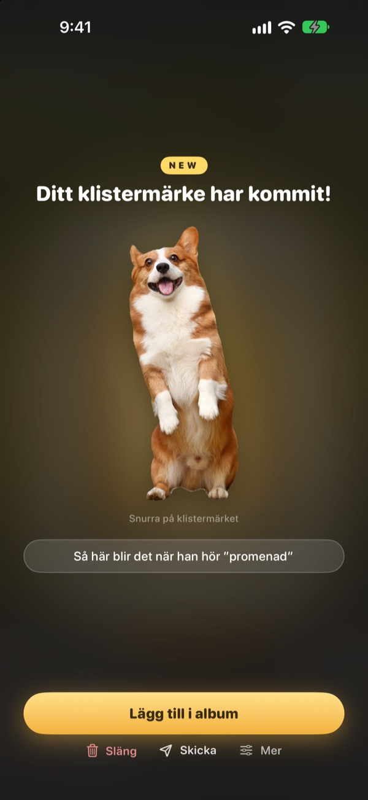
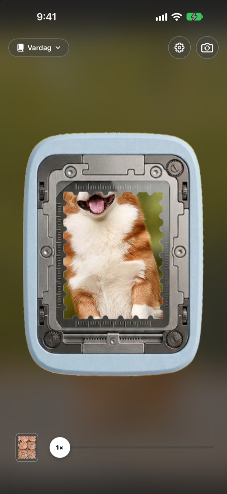
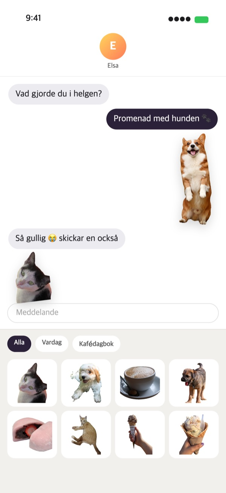
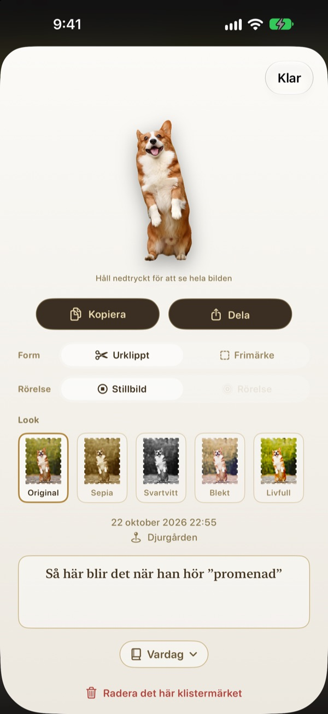
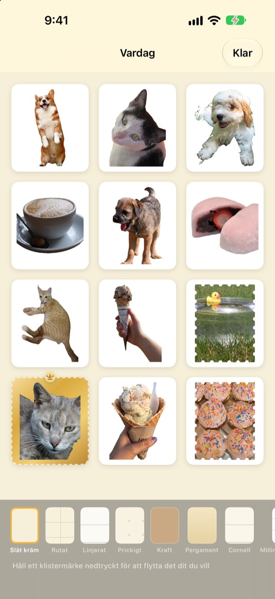

Håll nere.
Stunden blir ett klistermärke.
Ställ in scenen i hålslagets fönster, håll nere och släpp. Hunden klipps ut efter sin egen form, med en kort stunds rörelse från strax före och efter trycket. Skicka den direkt från Meddelanden eller tangentbordet.
Alla funktioner är gratis. Klistermärken och foton stannar på din enhet.

Testa själv
Välj en scen, håll ned hålslagsknappen och släpp. Prova sedan en annan form och en annan look.
De bästa stunderna somnar in i Bilder
Du fångar hunden precis när den räcker ut tungan. Men ska det bli ett klistermärke måste du leta upp bilden, klippa ut den och öppna ännu en klistermärkesapp. Under tiden har chatten för länge sedan gått vidare. Punching river loss klistermärket där du fotar, och så fort du lägger det i ett album ligger det i klistermärkeslådan i Meddelanden.
Motiv klipps ut, landskap blir frimärken
Finns det något att klippa ut, som en människa, ett husdjur eller en sak, får du just det. Finns det inget, som i ett landskap, rivs det loss som ett frimärke med tandad kant.
En kort stunds rörelse runt trycket följer med, så klistermärket rör sig.

Direkt i Meddelanden och på tangentbordet
Lossrivna klistermärken dyker upp i klistermärkeslådan i Meddelanden. Slå på Punching-tangentbordet så kan du välja och klistra in dem i andra appar också.
Rörliga klistermärken kommer fram i rörelse. Håll ett klistermärke nedtryckt för att kopiera det och klistra in det var du vill.

Form och look, även efteråt
Växla mellan urklippt och frimärke, mellan rörelse och stillbild, när du vill. Originalfotot sparas, så allt förblir lika skarpt som första gången hur många gånger du än byter.
Välj en look bland Original, Sepia, Svartvitt, Blekt, Livfull och Cyan och lägg till några ord, datum och plats.

Samla i album, skriv ut på papper
Gör ett album för varje tema, så kan du välja album för album även i Meddelanden och på tangentbordet. Välj sidor som kraft, rutat, linjerat eller pergament och ordna klistermärkena som du vill.
Gör ett album till en PDF för utskrift med skärlinjer i frimärksform och skriv ut den direkt på klistermärkespapper.

Kom igång i tre steg
- 1
Sikta
Placera det du vill fånga i fönstret mitt i kameran.
- 2
Håll nere och släpp
Klistermärket rivs loss i samma stund som du släpper.
- 3
Spara och skicka
Lägg det i ett album så finns det direkt i Meddelanden och på tangentbordet.
Var du använder det och var du ändrar det
- Meddelanden
- ＋ bredvid textfältet ▸ Klistermärken ▸ Punching-klistermärken
- Andra appar
- Slå på Punching-tangentbordet, byt till det med jordglobsknappen, välj och klistra in
- Överallt
- Håll ett klistermärke nedtryckt, kopiera och klistra in
- Pappersklistermärken
- ⋯ i ett album ▸ Använd ▸ Klistermärkesark för utskrift (PDF)
- Sidor och ordning
- ⋯ i ett album ▸ Dekorera fritt
- Äldre foton
- Importera från Bilder i ett album
- Första formen
- Inställningar ▸ Riv loss ▸ Standardform
- Se rörelse
- Inställningar ▸ Visning ▸ Spela upp rörelse automatiskt
- Snabbstart
- Öppna Punching-kameran i Genvägar eller Kontrollcenter
Inställningar hittar du under kugghjulet uppe till höger i kameran.
Vanliga frågor
Mitt klistermärke rör sig inte.
Gå till Inställningar ▸ Visning uppe till höger i kameran och kontrollera att Spela upp rörelse automatiskt är på. Tryck sedan på klistermärket och kontrollera att Rörelse är på under Form. Rörelsen spelas alltid in, så du kan slå på den när som helst. Foton som importerats från Bilder-appen är en enda bild och rör sig därför inte.
Jag fick ett frimärke i stället för ett urklippt klistermärke.
Scener utan något att klippa ut, som ett landskap, rivs automatiskt loss som ett frimärke. Tryck på klistermärket för att ändra det under Form när som helst. Vill du ha frimärken från början ändrar du Inställningar ▸ Riv loss ▸ Standardform.
Jag ser inte mina klistermärken i Meddelanden.
I Meddelanden trycker du på ＋ bredvid textfältet ▸ Klistermärken och letar upp Punching-klistermärken. De dyker upp när du har rivit loss minst ett klistermärke i Punching, och har du fler album kan du bläddra album för album. Steg för steg finns i Inställningar ▸ Använd ▸ Använd i Meddelanden och på tangentbordet.
Hur slår jag på tangentbordet?
Tryck på Öppna Inställningar under Inställningar ▸ Använd ▸ Använd i Meddelanden och på tangentbordet och slå på Tangentbord ▸ Punching-klistermärken. För att klistra in klistermärken krävs Tillåt fullständig åtkomst, men tangentbordet läser eller skickar aldrig det du skriver och ansluter aldrig till internet. Tryck sedan på jordglobsknappen i valfri app för att byta till Punching-klistermärken.
Kan jag skriva ut riktiga klistermärken?
Tryck på ⋯ uppe till höger i ett album ▸ Använd ▸ Klistermärkesark för utskrift (PDF). Du får en PDF på 300 dpi för hela albumet med skärlinjer i frimärksform, redo för klistermärkespapper i skrivaren hemma eller hos ett tryckeri. Utskriftsguide i samma meny tar dig igenom det steg för steg.
Vart tog mina gamla samlingar vägen?
Från och med 1.0.1 grupperas klistermärken bara på ett sätt: i album. Varje samling blev ett album med samma namn, och klistermärkena, sidorna och ordningen följde med som de var.
Det lyser ett grönt ljus i statusfältet.
Det är kameraindikatorn i iOS. Den lyser bara medan kameraskärmen visas. När du öppnar ett album stannar kameran och ljuset släcks.
Vad händer när jag raderar ett klistermärke?
Klistermärket, originalfotot och rörelsedatan raderas permanent från din enhet och försvinner även från klistermärkeslådan i Meddelanden. Det går inte att återställa, så tänk efter innan du raderar.
Var sparas mina foton och klistermärken?
Bara på din enhet. Det finns inget konto, ingen egen server och inga annonser. Det enda som lämnar enheten är anonym användningsstatistik, felrapporter och feedback som du själv skickar. Mer finns i integritetspolicyn.
Är det verkligen gratis?
Ja, alla funktioner är gratis. Gillar du appen kan du ge utvecklaren dricks i appen, men dricks låser inte upp något.
Frågor eller feedback? Skriv till leeo@kakao.com. Vi svarar oftast inom 2–3 dagar. Buggar och funktionsförslag kan du också rapportera på GitHub under M1zz/StampCamera.